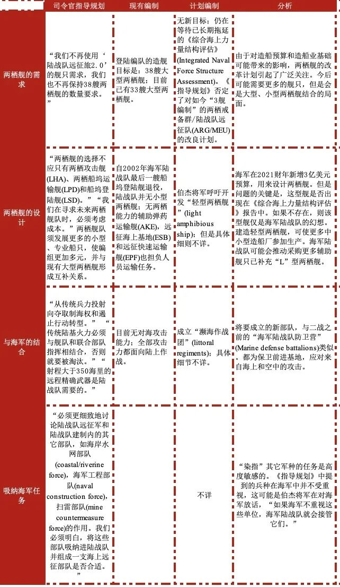

收录于合集

【作者】 马克·F·康锡安(Mark F. Cancian),战略与国际研究中心)国际安全项目顾问。
【编译】 虞敷扬（国政学人编译员，约翰斯∙霍普金斯大学 SAIS）
【校对】 朱文菡
【审核】 丁伟航
【排版】 高佳美
【来源】 战略与国际研究中心(Center for Strategic and International Studies ，CSIS)，成立于1964年，位于华盛顿特区，是一个跨党派、非营利性政策研究组织，致力于为决策者提供战略见解和政策解决方案。Cancian, Mark. “The Marine Corps’ Radical Shift toward China”. Center for Strategic and International Studies, March 25, 2020. https://www.csis.org/analysis/marine- corps-radical-shift-toward-china. Accessed April 10, 2020.
美国海军陆战队直指中国的重大改革
The Marine Corps’ Radical Shift toward China
文章导读
去年七月，伯杰将军(General Berger)在他对海军陆战队改革指南中指出：海军陆战队应根据《国防战略》(NDS)的精神，在部队的装备和训练方面做出重大改变。这在概念上吸引眼球，但缺乏具体措施。 如今，伯杰将军提供了和其概念一样激进的实施细则：无论是陆战队装备的坦克，还是陆战队的陆上持续作战(sustained ground combat)能力和打击叛乱(counterinsurgency)任务，都从陆战队的目标中消失了，陆战队将专注于在西太平洋地区，发起对中国的远程精确打击。 但是一旦这样的想定与未来发展的实际有出入时，经过如此改革的海军陆战队，在将来很难发挥出兵棋推演中展现的战力。
背景
多年来，战略家们一直渴望将美军各军种的重心重新放在太平洋地区和中国。 随着经济的增长、军事的现代化、以及重新确立地区霸权的愿望显著增强，中国已逐渐成为美国面临的主要长期挑战。 奥巴马政府期间的“亚太再平衡”战略因俄罗斯占领克里米亚和伊斯兰国在叙利亚与伊拉克的攻势而无法落实。特朗普政府的《国防战略》聚焦于和中俄的大国竞争，其中中国为首要对手。2019年，美代理国防部长帕特里克∙沙纳罕（Patrick Shanahan）曾强调，国防部的重点应是：“中国，中国，中国。” 为应对中国带来的新挑战，《国防战略》呼吁美军进行改革，“我们不能指望使用昨天的武器装备在明天的军事冲突中获胜。” 同时，《国防战略》还指出：部队的现代化水平远比部队规模大小重要，暗指为应对未来大国冲突,美军应缩减规模以集中于能力建设。 但是《国防战略》并未提出更加具体的措施，特朗普政府也未在随后的国防预算中体现出足够的改变。
伯杰将军的指导意见
2019年7月11日戴维·伯杰将军被任命为海军陆战队司令。在上任伊始，他立即公布了《司令官指导规划》(Commandant’s Planning Guidance，以下简称《指导规划》)，其中列出了他对海军陆战队未来发展的愿景。以往的军中首长也会在起草这样的文件，但与他们不同的是，伯杰将军提出了军种的重大改革目标。 伯杰将军提出的目标与《国防战略》中的高度契合，并完全聚焦于中国。这与伯杰将军曾任西太平洋地区海军陆战队指挥官的经历，有着密不可分的联系。他希望将海军陆战队传统的“战备部队(Force in Readiness)”角色与未来的大国冲突相结合，“海军陆战队将作为一支海上远征部队进行训练和整备，并准备在竞争激烈的海域内执行任务，以支持舰队行动。” 伯杰将军的核心观点是：在对手(即中国)的空中、导弹和海军力量(美国海军陆战队称之为武器交战区Weapon Engagement Zone)火力范围内进行作战。海军陆战队将摒弃曾经需要从外部逐渐攻进交战区的“防区外部队”(stand-off force)的概念，成为在部署在武器交战区内的“防区内部队”(stand-in force)。 指南指出：防区内部队是一支或多支经过精简优化、无视敌军远程精确拒止能力(long-range precision ‘stand-off’ capabilities)、在狭小限制海区作战的部队。为达成此目标，海军陆战队就必须发展“低信迹”(low signature)、低成本和可承受风险的平台，以取代现有的成本高、数量少和可视度高的飞机与舰船。 新概念的第二个重要部分是“分布式行动”(distributed operations)：相对小规模的部队独立开展行动，与从前“作为大部队的一部分”进行部署有所区别。“我们意识到对手日益增强的精确打击能力，因此我们需要将部队分散部署，在保证数量的同时降低集中部署带来的风险。” 因此， 海军陆战队的各个小分队将部署在第一岛链和南海各个岛礁周围，列装有防空和反舰导弹的各分队将使用这些导弹争夺相关区域的制空、制海权。 这些分队将消耗解放军兵力、遏止解放军向外拓展，并最终形成合力，将解放军挤压回中国本土。 第三个需要改革的便是海军陆战队的制度： 海军陆战队将把陆上持续作战的任务完全交给美国陆军，转而关注濒海战斗。 在中东、朝鲜和欧洲地区的地面作战将完全是陆军的职责。 最后一个部分有关政治：伯杰将军认为，国防预算在可预见的将来会与现在持平，甚至是下滑。 与五年前国防开支连续上涨、新装备得以稳定研发不同，如今形势下的部队建设发展必须做出取舍。如果海军陆战队想要研发新装备、增加新战力，必须对现有部队进行裁减。
实施改革
伯杰将军指出：海军陆战队将对如何落实改革开展分析和兵棋推演。随着华尔街日报相关报道流出和海军陆战队《2030兵力设计》发布，这一改革的更多细节愈发清晰。 改革过程将持续10年。重新整编后的海军陆战队将专注于与中国在西太平洋可能发生的冲突；建立远程精确打击能力；去除打击叛乱和与它国陆军展开地面作战的能力；削减部队规模以支付新装备。 下表按要素列出了规划指导的内容，海军陆战队现有资产将何去何从，以及改革可会带来的影响。
地面部队
空中部队
支援能力
人员
海军支援能力
风险
激进改革会带来风险。风险来自缺乏对冲、对现有任务的偏离以及新战争概念的不确定性。如果海军陆战队对未来的判断有误，陆战队会在下一场战争中处于劣势，甚至无法参战。
无对冲 当前文提到的所有改革提议被贯彻落实后，海军陆战队将会有精良的组织结构，在西太平洋的岛屿战役(island campaign)中对抗中国。虽然《国防战略》允许与其它对手对冲，如朝鲜、伊朗、恐怖组织，但是海军陆战队不打算如此。伯杰将军在《指导规划》中指出：“这支单一任务的未来部队将会在全球范围内应对挑战，但是我们不寻求对冲或为应对某些意外情况而平衡军种发展。”缺乏对冲意味着海军陆战队将无法发挥其过去拥有的广泛能力。改革后的军种结构，将使陆战队无法参与，类似朝鲜战争、越南战争和伊拉克战争那样的行动。美国过去70年的历史是：通过强大的美军威慑其它大国，避免大国冲突；应对区域冲突。虽然陆战队有适应能力，但是缺少最根本的专业性。海军陆战队可能计划将应对这些冲突的任务交给陆军，但是回顾过去，美国陆军的规模太小，不足以完成所有的陆上持续作战。海军陆战队军官们认为，陆战队只需要专注于应对西太平洋地区的高端军事冲突。这是不合时宜的。 历史上有很多这样的例子，军队备战的方向与实际面临的战争性质南辕北辙。重新适应战争，有时需要付出血的代价，甚至灾难性的失败。 例如，20世纪50和60年代的美国陆军，专注于在欧洲地区应对和华约国家的大国冲突。但是美国陆军后来不得不在东南亚地区打击叛乱。安德鲁∙克雷皮内维奇(Andrew Krepinevich)认为，“陆军是在常规战争中应对敌军野战部队的利器，但是在反游击作战中往往事倍功半。”陆军和海军使用他们的后备力量来应对意外的需求。因此它们的预备队与现役部队并不相同。比如，大多数的陆军医疗、运输、工程、民事、心理战分队都在预备队中。海军陆战队的新编制下可能会保留一些坦克、牵引式火炮、舟桥部队、宪兵与后勤预备队以应对未来战争中与它国陆军进行地面作战，或再次参与打击叛乱行动。但是《指导规划》中没有提到这些部分。
从现有行动中撤离
海军陆战队司令员设想中的新陆战队计划，忽略了“为赢得未来大国冲突做准备与维持当前对盟友的日常安全承诺以及危机应对”的矛盾。特朗普政府和奥巴马政府类似，都在国家战略文件中许下过于广泛的安全承诺。这些广泛的安全承诺带来的就是烈度不一的作战任务，这些作战任务迫使各军种必须采取高、低装备混搭的模式：在部署先进且昂贵的装备以应对大国冲突的同时，还要保有相对便宜且数量巨大的装备以应对低烈度威胁。海军陆战队相对精简的规模并不适用此类方法。
新型作战概念的不确定性
将海军陆战队分散部署在地火力打击区域内的概念是否可行，是改革的最后一项风险。海军陆战队进行了大量的兵棋推演，并对这一构想的成功感到满意。但是陆战队也知道，敌军也是塑造战争环境的一方。 在敌方的武器交战区深处，长期部署脆弱的小分队将是一个挑战。即使是小分队也需要燃料和弹药的持续补给，如果中国有办法切断补给、甚至是逐个歼灭这些小分队，整个作战概念就会分崩离析。
改革进行时
《兵力设计2030》强调了改革的灵活性，在改革过程中随时可以进行修改。 因此在数轮试验和分析后会有“第三阶段”。更多的改革细则将会明确，用以填补目前在“后勤、预备队、两栖舰”等方面的缺口。海军陆战队应该利用“改革进行时”的特点降低风险。
 **_本文由国政学人独家编译推荐，文章观点不代表本平台观点，转载请联系授权。_**
**_本文由国政学人独家编译推荐，文章观点不代表本平台观点，转载请联系授权。_**

点“在看”给我一朵小黄花
国政学人
支持学术公益与知识传播
微信扫一扫赞赏作者 __赞赏
已喜欢，对作者说句悄悄话
取消 __
发送给作者
发送
最多40字，当前共字
上一页 1/3 下一页
长按二维码向我转账
支持学术公益与知识传播
受苹果公司新规定影响，微信 iOS 版的赞赏功能被关闭，可通过二维码转账支持公众号。